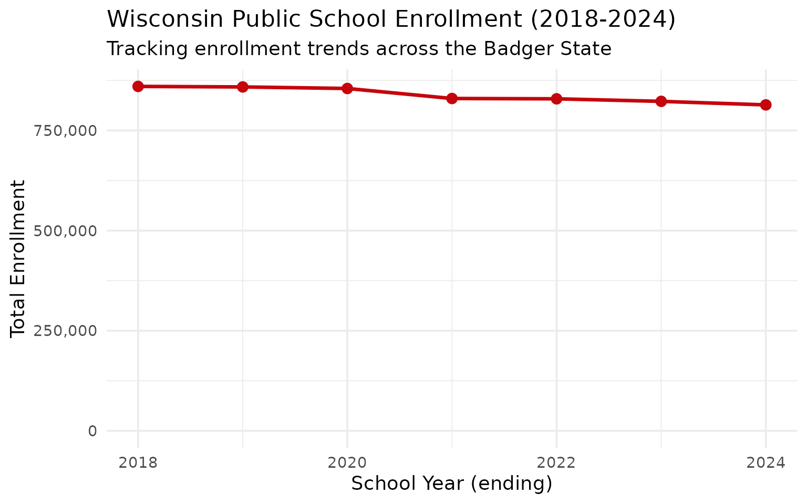
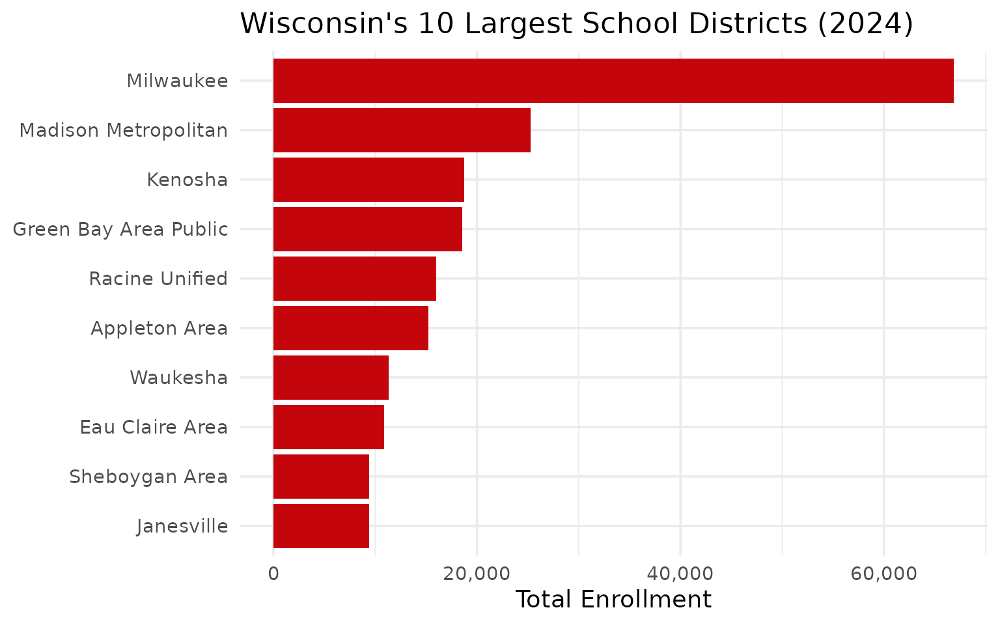
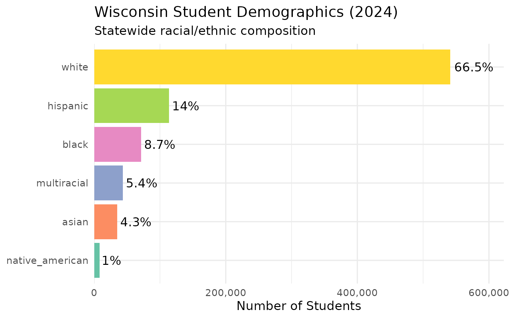
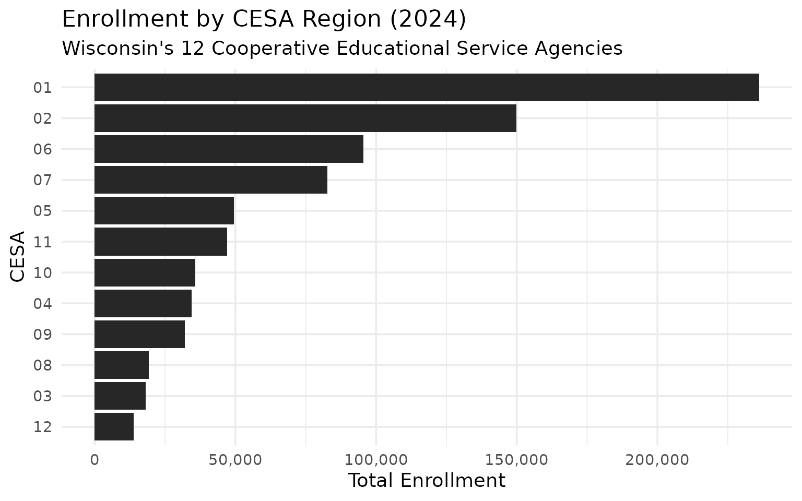
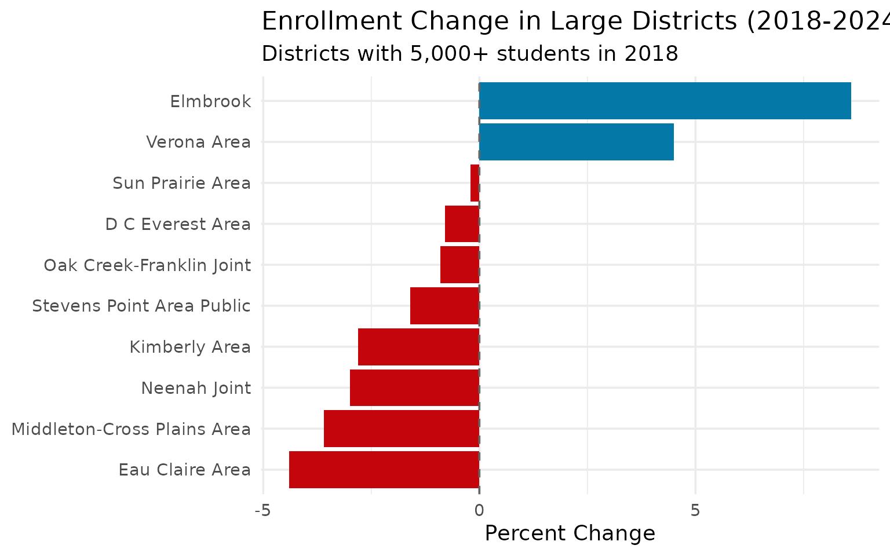

10 Insights from Wisconsin School Enrollment Data
Source:vignettes/enrollment_hooks.Rmd
enrollment_hooks.Rmd
library(wischooldata)
library(dplyr)
library(tidyr)
library(ggplot2)
theme_set(theme_minimal(base_size = 14))This vignette explores Wisconsin’s public school enrollment data, surfacing key trends and demographic patterns across the Badger State’s school system.
1. Wisconsin educates nearly 850,000 students
Wisconsin public schools serve a substantial student population, with enrollment spread across urban centers and rural dairy country alike.
enr <- fetch_enr_multi(2018:2024)
state_totals <- enr |>
filter(is_state, subgroup == "total_enrollment", grade_level == "TOTAL") |>
select(end_year, n_students) |>
mutate(change = n_students - lag(n_students),
pct_change = round(change / lag(n_students) * 100, 2))
state_totals
#> end_year n_students change pct_change
#> 1 2018 860130 NA NA
#> 2 2019 858833 -1297 -0.15
#> 3 2020 854959 -3874 -0.45
#> 4 2021 829935 -25024 -2.93
#> 5 2022 829143 -792 -0.10
#> 6 2023 822804 -6339 -0.76
#> 7 2024 814002 -8802 -1.07
ggplot(state_totals, aes(x = end_year, y = n_students)) +
geom_line(linewidth = 1.2, color = "#C5050C") +
geom_point(size = 3, color = "#C5050C") +
scale_y_continuous(labels = scales::comma, limits = c(0, NA)) +
labs(
title = "Wisconsin Public School Enrollment (2018-2024)",
subtitle = "Tracking enrollment trends across the Badger State",
x = "School Year (ending)",
y = "Total Enrollment"
)
2. Milwaukee dominates the enrollment landscape
Milwaukee Public Schools is by far the largest district, serving over 70,000 students—more than the next five districts combined.
enr_2024 <- fetch_enr(2024)
top_10 <- enr_2024 |>
filter(is_district, subgroup == "total_enrollment", grade_level == "TOTAL") |>
arrange(desc(n_students)) |>
head(10) |>
select(district_name, n_students)
top_10
#> district_name n_students
#> 1 Milwaukee 66864
#> 2 Madison Metropolitan 25247
#> 3 Kenosha 18719
#> 4 Green Bay Area Public 18579
#> 5 Racine Unified 15963
#> 6 Appleton Area 15230
#> 7 Waukesha 11318
#> 8 Eau Claire Area 10866
#> 9 Sheboygan Area 9427
#> 10 Janesville 9414
top_10 |>
mutate(district_name = forcats::fct_reorder(district_name, n_students)) |>
ggplot(aes(x = n_students, y = district_name)) +
geom_col(fill = "#C5050C") +
scale_x_continuous(labels = scales::comma) +
labs(
title = "Wisconsin's 10 Largest School Districts (2024)",
x = "Total Enrollment",
y = NULL
)
3. Milwaukee’s demographics differ sharply from the state
Milwaukee Public Schools is majority Black and Hispanic, while the state as a whole remains predominantly white—a stark urban-rural divide.
demographics <- enr_2024 |>
filter(is_state, grade_level == "TOTAL",
subgroup %in% c("hispanic", "white", "black", "asian", "multiracial", "native_american")) |>
mutate(pct = round(pct * 100, 1)) |>
select(subgroup, n_students, pct) |>
arrange(desc(n_students))
demographics
#> subgroup n_students pct
#> 1 white 541411 66.5
#> 2 hispanic 114020 14.0
#> 3 black 71146 8.7
#> 4 multiracial 43621 5.4
#> 5 asian 34881 4.3
#> 6 native_american 8245 1.0
demographics |>
mutate(subgroup = forcats::fct_reorder(subgroup, n_students)) |>
ggplot(aes(x = n_students, y = subgroup, fill = subgroup)) +
geom_col(show.legend = FALSE) +
geom_text(aes(label = paste0(pct, "%")), hjust = -0.1) +
scale_x_continuous(labels = scales::comma, expand = expansion(mult = c(0, 0.15))) +
scale_fill_brewer(palette = "Set2") +
labs(
title = "Wisconsin Student Demographics (2024)",
subtitle = "Statewide racial/ethnic composition",
x = "Number of Students",
y = NULL
)
4. Wisconsin’s 12 CESAs organize regional services
Wisconsin divides into 12 Cooperative Educational Service Agencies (CESAs) that provide support services to districts. Enrollment varies widely by region.
cesa_totals <- enr_2024 |>
filter(is_district, subgroup == "total_enrollment", grade_level == "TOTAL",
!is.na(cesa)) |>
group_by(cesa) |>
summarize(
n_districts = n_distinct(district_id),
total_students = sum(n_students, na.rm = TRUE),
.groups = "drop"
) |>
arrange(desc(total_students))
cesa_totals
#> # A tibble: 12 × 3
#> cesa n_districts total_students
#> <chr> <int> <dbl>
#> 1 01 66 236097
#> 2 02 78 149803
#> 3 06 39 95481
#> 4 07 38 82704
#> 5 05 36 49470
#> 6 11 39 47054
#> 7 10 29 35729
#> 8 04 26 34420
#> 9 09 22 32060
#> 10 08 27 19196
#> 11 03 31 18121
#> 12 12 18 13867
cesa_totals |>
mutate(cesa = forcats::fct_reorder(as.factor(cesa), total_students)) |>
ggplot(aes(x = total_students, y = cesa)) +
geom_col(fill = "#282728") +
scale_x_continuous(labels = scales::comma) +
labs(
title = "Enrollment by CESA Region (2024)",
subtitle = "Wisconsin's 12 Cooperative Educational Service Agencies",
x = "Total Enrollment",
y = "CESA"
)
5. Suburban Madison and Milwaukee are growing
While Milwaukee Public Schools has declined, suburban districts like Waukesha, Elmbrook, and Madison Metropolitan have grown or held steady.
growth <- enr |>
filter(is_district, subgroup == "total_enrollment", grade_level == "TOTAL",
end_year %in% c(2018, 2024)) |>
group_by(district_id, district_name) |>
filter(n() == 2) |>
summarize(
y2018 = n_students[end_year == 2018],
y2024 = n_students[end_year == 2024],
pct_change = round((y2024 / y2018 - 1) * 100, 1),
.groups = "drop"
) |>
filter(y2018 > 5000) |>
arrange(desc(pct_change)) |>
head(10)
growth
#> # A tibble: 10 × 5
#> district_id district_name y2018 y2024 pct_change
#> <chr> <chr> <dbl> <dbl> <dbl>
#> 1 0714 Elmbrook 7239 7863 8.6
#> 2 5901 Verona Area 5543 5794 4.5
#> 3 5656 Sun Prairie Area 8428 8411 -0.2
#> 4 4970 D C Everest Area 6003 5954 -0.8
#> 5 4018 Oak Creek-Franklin Joint 6584 6527 -0.9
#> 6 5607 Stevens Point Area Public 7095 6980 -1.6
#> 7 2835 Kimberly Area 5204 5058 -2.8
#> 8 3892 Neenah Joint 6699 6497 -3
#> 9 3549 Middleton-Cross Plains Area 7325 7059 -3.6
#> 10 1554 Eau Claire Area 11367 10866 -4.4
growth |>
mutate(district_name = forcats::fct_reorder(district_name, pct_change)) |>
ggplot(aes(x = pct_change, y = district_name, fill = pct_change > 0)) +
geom_col(show.legend = FALSE) +
geom_vline(xintercept = 0, linetype = "dashed", color = "gray40") +
scale_fill_manual(values = c("TRUE" = "#0479A8", "FALSE" = "#C5050C")) +
labs(
title = "Enrollment Change in Large Districts (2018-2024)",
subtitle = "Districts with 5,000+ students in 2018",
x = "Percent Change",
y = NULL
)
6. Milwaukee’s enrollment has declined significantly
Milwaukee Public Schools has lost thousands of students over the past decade, driven by choice programs, charter schools, and population shifts.
milwaukee <- enr |>
filter(is_district, subgroup == "total_enrollment", grade_level == "TOTAL",
grepl("Milwaukee", district_name, ignore.case = TRUE),
!grepl("Suburban|Area", district_name, ignore.case = TRUE))
milwaukee_summary <- milwaukee |>
select(end_year, district_name, n_students) |>
arrange(district_name, end_year)
milwaukee_summary
#> end_year district_name n_students
#> 1 2024 Central City Cyberschool of Milwaukee Inc 378
#> 2 2023 Central City Cyberschool of Milwaukee, Inc. 389
#> 3 2018 Milwaukee 75539
#> 4 2019 Milwaukee 75431
#> 5 2020 Milwaukee 74683
#> 6 2021 Milwaukee 71510
#> 7 2022 Milwaukee 69115
#> 8 2023 Milwaukee 67500
#> 9 2024 Milwaukee 66864
#> 10 2018 Milwaukee Academy of Science 1064
#> 11 2019 Milwaukee Academy of Science 1132
#> 12 2020 Milwaukee Academy of Science 1220
#> 13 2021 Milwaukee Academy of Science 1266
#> 14 2022 Milwaukee Academy of Science 1349
#> 15 2018 Milwaukee Collegiate Academy 287
#> 16 2019 Milwaukee Collegiate Academy 320
#> 17 2018 Milwaukee Math and Science Academy 307
#> 18 2019 Milwaukee Math and Science Academy 294
#> 19 2020 Milwaukee Math and Science Academy 222
#> 20 2021 Milwaukee Math and Science Academy 203
#> 21 2022 Milwaukee Math and Science Academy 201
#> 22 2024 Milwaukee Math and Science Academy Inc. 244
#> 23 2023 Milwaukee Math and Science Academy, Inc. 231
#> 24 2018 Milwaukee Scholars Charter School 642
#> 25 2019 Milwaukee Scholars Charter School 724
#> 26 2020 Milwaukee Scholars Charter School 707
#> 27 2021 Milwaukee Scholars Charter School 732
#> 28 2022 Milwaukee Scholars Charter School 717
#> 29 2024 Milwaukee Scholars Charter School Inc 769
#> 30 2023 Milwaukee Scholars Charter School, Inc. 670
#> 31 2024 Milwaukee Science Education Consortium Inc 1404
#> 32 2023 Milwaukee Science Education Consortium, Inc. 1401
#> 33 2018 South Milwaukee 3165
#> 34 2019 South Milwaukee 3062
#> 35 2020 South Milwaukee 3021
#> 36 2021 South Milwaukee 2819
#> 37 2022 South Milwaukee 2863
#> 38 2023 South Milwaukee 2773
#> 39 2024 South Milwaukee 2783
#> 40 2018 West Allis-West Milwaukee 8714
#> 41 2019 West Allis-West Milwaukee 8240
#> 42 2020 West Allis-West Milwaukee 8020
#> 43 2021 West Allis-West Milwaukee 7418
#> 44 2022 West Allis-West Milwaukee 7347
#> 45 2023 West Allis-West Milwaukee 7095
#> 46 2024 West Allis-West Milwaukee 69387. Wisconsin has a strong 4K (four-year-old kindergarten) program
Wisconsin’s 4K program enrolls tens of thousands of four-year-olds, reflecting the state’s investment in early childhood education.
grade_breakdown <- enr_2024 |>
filter(is_state, subgroup == "total_enrollment",
grade_level %in% c("PK4", "PK", "K", "01", "09", "12")) |>
select(grade_level, n_students) |>
arrange(match(grade_level, c("PK4", "PK", "K", "01", "09", "12")))
grade_breakdown
#> grade_level n_students
#> 1 PK 6363
#> 2 K 51787
#> 3 01 53983
#> 4 09 65035
#> 5 12 649578. Rural dairy country districts are small but numerous
Wisconsin has hundreds of small rural districts, many in the state’s famous dairy farming regions. Most have fewer than 1,000 students.
size_distribution <- enr_2024 |>
filter(is_district, subgroup == "total_enrollment", grade_level == "TOTAL") |>
mutate(size_category = case_when(
n_students < 500 ~ "Under 500",
n_students < 1000 ~ "500-999",
n_students < 2500 ~ "1,000-2,499",
n_students < 5000 ~ "2,500-4,999",
n_students < 10000 ~ "5,000-9,999",
TRUE ~ "10,000+"
)) |>
mutate(size_category = factor(size_category,
levels = c("Under 500", "500-999", "1,000-2,499", "2,500-4,999", "5,000-9,999", "10,000+"))) |>
count(size_category) |>
mutate(pct = round(n / sum(n) * 100, 1))
size_distribution
#> size_category n pct
#> 1 Under 500 136 30.3
#> 2 500-999 124 27.6
#> 3 1,000-2,499 108 24.1
#> 4 2,500-4,999 50 11.1
#> 5 5,000-9,999 23 5.1
#> 6 10,000+ 8 1.89. Green Bay anchors northeastern Wisconsin
Green Bay Area Public Schools is the largest district in northeastern Wisconsin, serving the region’s industrial and shipping hub.
fox_valley <- enr_2024 |>
filter(is_district, subgroup == "total_enrollment", grade_level == "TOTAL",
grepl("Green Bay|Appleton|Oshkosh|Fond du Lac", district_name, ignore.case = TRUE)) |>
select(district_name, n_students) |>
arrange(desc(n_students))
fox_valley
#> district_name n_students
#> 1 Green Bay Area Public 18579
#> 2 Appleton Area 15230
#> 3 Oshkosh Area 9113
#> 4 Fond du Lac 6419
#> 5 North Fond du Lac 155510. Hispanic enrollment is growing statewide
Hispanic students are the fastest-growing demographic group in Wisconsin, particularly in southeastern Wisconsin and agricultural communities.
hispanic_trend <- enr |>
filter(is_state, grade_level == "TOTAL", subgroup == "hispanic") |>
select(end_year, n_students, pct) |>
mutate(pct = round(pct * 100, 1))
hispanic_trend
#> end_year n_students pct
#> 1 2018 103384 12.0
#> 2 2019 105863 12.3
#> 3 2020 107448 12.6
#> 4 2021 106239 12.8
#> 5 2022 109106 13.2
#> 6 2023 111830 13.6
#> 7 2024 114020 14.0Summary
Wisconsin’s school enrollment data reveals:
- Urban-rural divide: Milwaukee dominates enrollment but differs demographically from the rest of the state
- Suburban growth: Districts around Madison and Milwaukee are growing while the urban cores decline
- Early childhood focus: Wisconsin’s 4K program shows commitment to early education
- Small district heritage: Hundreds of tiny rural districts serve dairy country communities
- Demographic change: Hispanic enrollment is growing, reshaping the state’s student population
These patterns shape education policy across the Badger State.
Data sourced from the Wisconsin Department of Public Instruction.